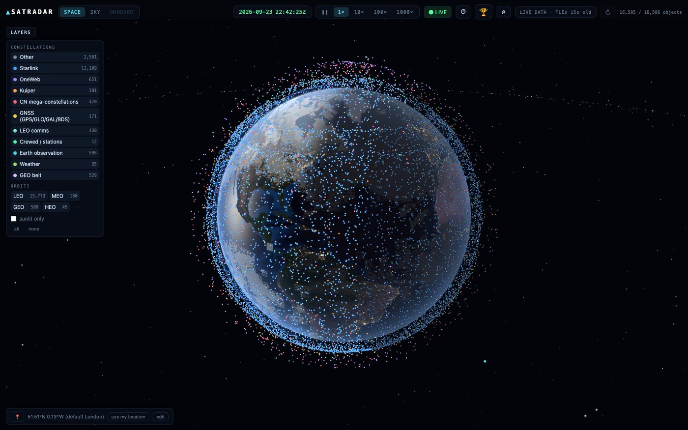
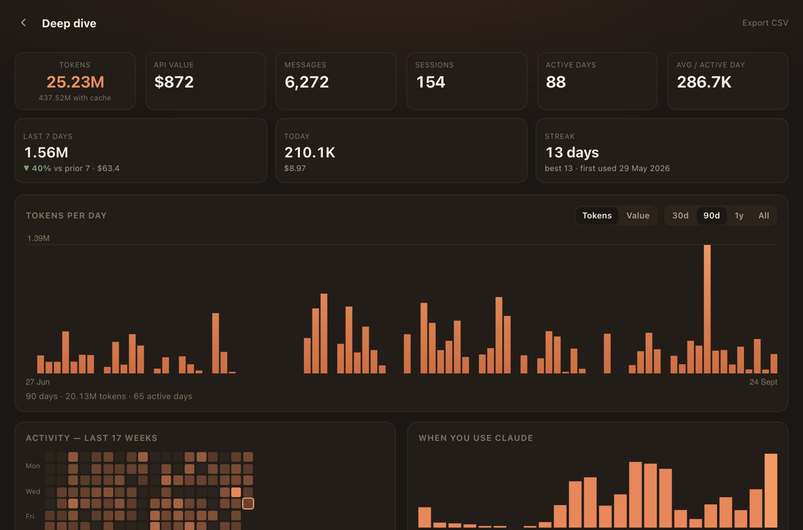
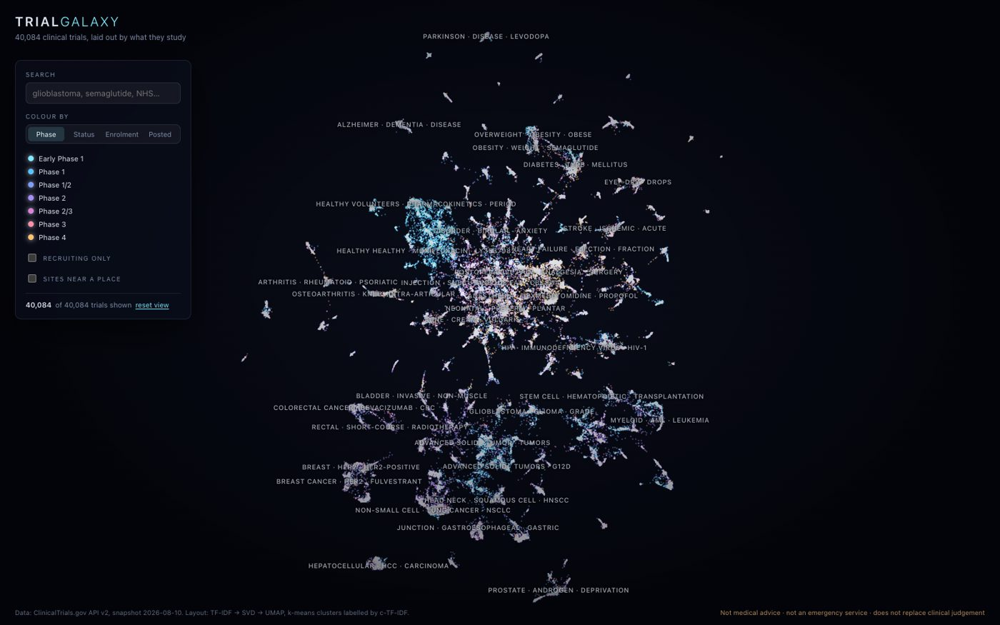
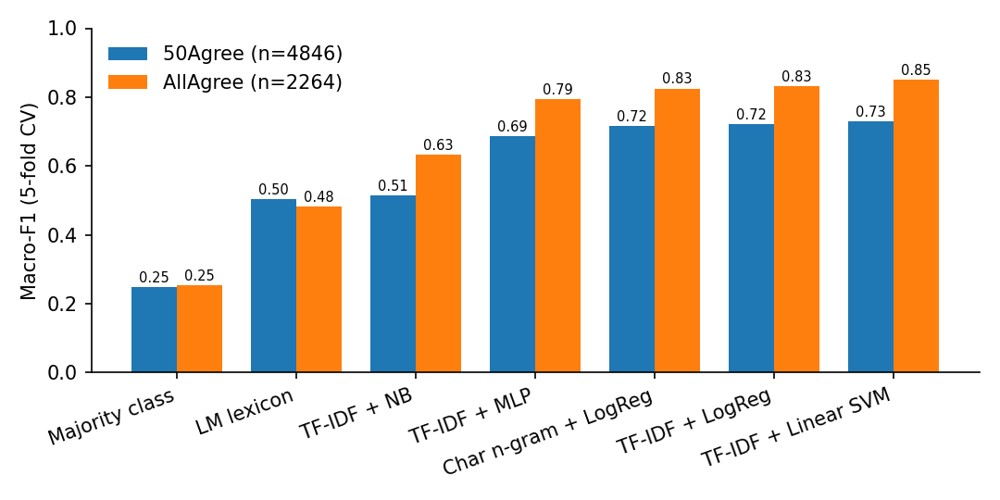
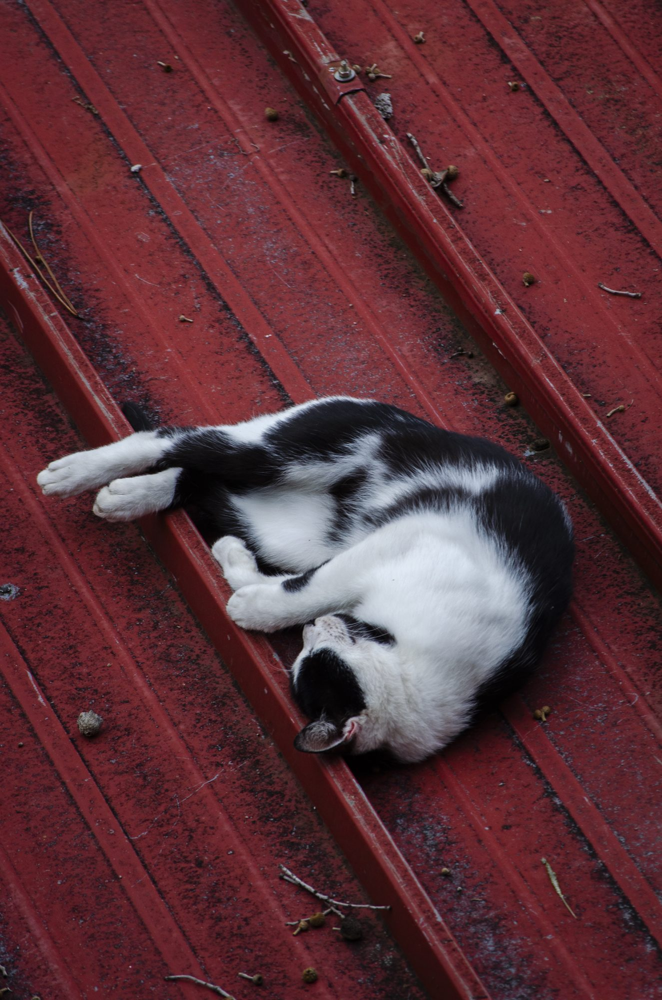

I'm Euan Brown, incoming Business and Health MSci at UCL. I founded and ran RewindMods, an international watch modification company, for 2 years, and now I build open-source tools and write analysis on healthtech markets, working towards a career in venture and impact investing.
Worked with the Global Health impact team, taking calls with early-stage biotech and medical companies and conducting primary due diligence. Wrote and presented an IC1 investment committee memo on a biotech company to a panel of senior healthcare investors, and produced disease-burden research packs on osteoarthritis and cardiovascular disease.
Supported a live commercial due diligence project, modelling 15 years of market share data across two countries, synthesising industry expert interviews and presenting findings in update meetings.
Sector analysis and equity research exposure. Ran long and short strategies in a live stock market simulation with £100,000 of virtual capital, growing the book by 8% and placing first in the cohort, and delivered a stock pitch to senior employees.
Worked alongside portfolio managers and market strategists, learning hedge fund operations, debt trading and the risk frameworks used by family offices and institutional investors.
Building financial-planning evaluation scenarios and grading guidelines for LLM benchmarking, and assessing AI-generated code against production-grade quantitative trading repositories to evaluate agentic coding performance.
Also: team coordinator for the UK & Europe Restructuring Competition (finals at Imperial College London, March 2026), and The American School in London, Class of 2026.
An international watch modification company I founded in August 2024 and ran solo for 2 years, modifying the Omega × Swatch MoonSwatch in-house for the affordable-luxury gap. Product development, the modifications themselves, marketing, web development, sourcing, fulfilment and bookkeeping, all one pair of hands. Wound down in 2026 as I turned towards university and new projects.
A B2B SaaS platform for AI-powered CV and cover letter grading, built for recruiters to score applications against their own criteria and rank candidates. In active development.

Orbital mechanicsEvery active satellite in orbit, live in a browser tab. Each object is described by eight numbers; propagating all sixteen thousand of them takes about nine milliseconds in a web worker, so there is no backend and nothing to call. I built it because in this domain a wrong number looks exactly like a right one, so most of the work went into being able to tell the difference.

Developer toolsA menu-bar app showing live Claude usage: the five-hour session window, weekly and per-model limits, with burn-rate projections and cost estimates. I built it because the alternative was refreshing a web page to find out whether I was going to run out halfway through a task.

Clinical researchEvery registered clinical trial, around forty thousand of them, mapped and filterable in the browser. Built to make the trial landscape for a condition something you can look at rather than something you have to query.
A healthtech catalyst tracker that merges three public data streams, SEC filings, ClinicalTrials.gov study updates and funding news, into a single feed for a watchlist of digital health companies. I built it because following early-stage healthtech means watching three websites that never talk to each other.
The fully reproducible benchmark suite behind my research note on financial sentiment classification. Seven models, one protocol, deterministic results, run it and you get the same tables I publish.
Independent research note · July 2026
A systematic baseline study on the Financial PhraseBank: a ladder of seven classifiers, from a majority-class baseline and the Loughran–McDonald dictionary up to a small neural network, all under one cross-validation protocol.
The finding: label agreement moves accuracy by around 11 points, while model capacity at this scale moves it by roughly zero. A linear SVM reaches 89.3% on cleanly labelled data, within 8 points of published FinBERT results at a small fraction of the compute, and above GPT-4's published few-shot accuracy on this dataset.
Methods, limitations and every number are in the paper, and the repo reproduces it end to end. Paper & code on GitHub

A research paper on prompt injection: how instructions hidden in untrusted content, such as web pages, documents and tool outputs, can take over the behaviour of language models and the agents built on them, and which defences actually hold up.
Showcased the projects I've been building with Claude, including SATRADAR, at the Claude Founder House event. Photos and a write-up to follow.
Global digital health funding in H1 2026 was $22.6B, essentially flat year on year, but deal count fell 38% and the average cheque is now roughly $49M. Same capital, far fewer companies. That is not a slowdown, it is selectivity. Europe bucked the trend entirely at $5.9B (up 60%), while in the US 20 mega-deals absorbed 45% of all capital. The middle of the market has largely disappeared, as companies are either conviction bets or building lean until they become one.
Rock Health H1 2026 funding report; Galen Growth H1 2026 digital health review; EU-Startups reporting, July 2026.
UpDoc, cleared by the FDA in December 2025, is the first cleared device built around a conversational AI agent, and its architecture is the story. The language model handles the patient conversation, while the actual insulin dosing decisions come from deterministic, provider configured protocols. Language model on the outside, locked down logic on the inside. That resolves the core tension regulators face, as LLMs are non-deterministic and medicine cannot be, and it sets the template every AI clinician filing after it will follow.
FDA 510(k) K253281; Innolitics regulatory analysis, June 2026.
H1 2026 saw 115 digital health acquisitions, the busiest M&A quarter since late 2021, against exactly 1 notable IPO filing (Oura). The public markets are open only for category leaders with hardware consumer economics, so everyone else exits through tuck-in acquisitions by platforms assembling capabilities. Exit-ready now means being a clean, diligence-able capability a strategic buyer can bolt on, which, as PwC notes, now includes your AI actually being what you say it is.
Rock Health H1 2026; MobiHealthNews M&A reporting, June 2026; PwC mid-year deal review; TechCrunch, May 2026.
Young Travel Photographer of the Year 2024, semi-finalist. Freelance work for Matché, photographing luxury sporting facilities for their app and website, and photographer for Common Ground magazine.

For work, collaboration, or anything about the projects and research on this page: